3D-printed nightstand organizer
IB Design Technology HL design project, 2024–May 2025
A printed organizer that holds a phone, two chargers, glasses and tissues in one footprint. It passed all five fit requirements, 14 users rated it 8.1/10 for looks, and I redesigned it for injection molding at 250–500 units.
- 5/5fit requirements met with every item in place at once
- 11 of 14testers gave ease of use the top score
- 8.6/10survey rating for the chosen concept, against 2.2–5.4 for the other three
- Type
- Individual project
- Prototype
- 8 printed parts, press-fit
- Materials
- PETG, PLA (prototype); ABS, HDPE (production)
- Tools
- Onshape, Bambu Studio, Bambu Lab P1S
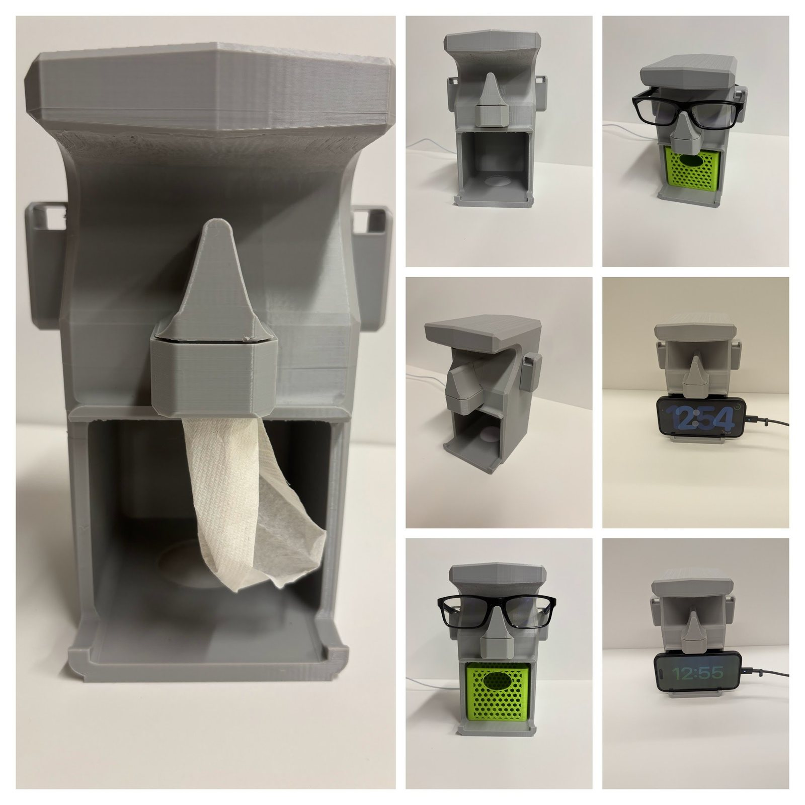
Overview
Nightstands collect a phone, chargers, glasses and tissues in a small space, and the cords end up tangled. Instead of a wireless charging station, I designed an organizer that works with the user's own cables and gives every item a fixed place. The project ran the full design cycle: user research, four concepts, cardboard and printed prototypes, user testing, a second iteration, and a production redesign for injection molding.
Objective and constraints
Make one product that holds everything a teenager keeps on their nightstand while taking up less space than those items did loose. I avoided wireless charging on purpose: the source I cited found it uses about 47% more power than a cable, and new EU rules on standard chargers make products with built-in chargers go obsolete.
| Constraint | Limit | Where it came from |
|---|---|---|
| Function | Two of the user's own chargers, one pair of glasses, at least 45 tissues | User survey; 45 is half a standard 90-sheet box |
| Size | Footprint of 56.25–90 sq in at most | 25% of a standard nightstand top (calculation below) |
| Manufacturing | Printable on an FDM printer, 256 × 256 mm bed, two build plates at most | Bambu Lab print bed size; fewer seams keeps the look clean |
| Cost and material | Cheap, widely available, rigid enough to hold its shape | Led to PLA and PETG filament |
| Appearance | Modern: clean lines, neutral color, smooth, and still a talking point | Modern design references |
| Quantity | One high-fidelity prototype | Enough to test function and looks before production |
Footprint calculation
Standard nightstands run 15–20 in wide and 15–18 in deep. I capped the organizer at a quarter of the top so the rest stays usable.
Smallest top: 15 in × 15 in = 225 sq in, and 225 ÷ 4 = 56.25 sq in
Largest top: 20 in × 18 in = 360 sq in, and 360 ÷ 4 = 90 sq in
Target footprint: 56.25–90 sq in
My role
This was an individual project, so I did every part of it myself:
- Wrote and ran the user surveys, and analyzed the results.
- Sketched the four concepts and modeled each one in Onshape.
- Built cardboard mockups and ran the fit tests.
- Designed the final eight-part assembly and its press-fit joints, and made the drawing package.
- Sliced and printed every part, wrote the manufacturing plan, and assembled the prototype.
- Ran the user tests, redesigned the parts that fell short, and designed the injection molds for the production version.
Process and technical details
User research
I asked 11 high school students what they keep on their nightstand. The most common items were a phone charger and a phone (8 of 11 each) and glasses (6 of 11), so those set the function requirements.
Concepts and selection
I sketched four concepts, modeled each in Onshape and built a cardboard mockup of each one. The mockups went on a real nightstand to check that every item fit and the size made sense. Then I ran a visual survey where people rated each design from 1 to 10 and suggested changes.
| Design | Rating | Why it did or didn't move forward |
|---|---|---|
| 1 | 5.4/10 | Too hard to produce even one, let alone many |
| 2 | 4.8/10 | Largest footprint, no dedicated spot per item, and a spinning mechanism that added complexity |
| 3 | 2.2/10 | Glasses hard to reach, but its slanted phone rest was worth keeping |
| 4 | 8.6/10 | Chosen. Most liked, and its weak points were easy to fix |
I folded the survey feedback into design 4: the "mouth" became a drawer, the back was closed off so tissues don't fall out, and I added the slanted phone rest from design 3.
Detailed design
- Eight parts: head, back plate, MagSafe cover, top and bottom nose, two ears and a storage bin. The head is 8.0 in tall with a 3.59 in deep base.
- Glasses rest on the nose and the ears hold the arms. The nose doubles as the tissue dispenser: tissues load through a door on the back and pull out through the nose.
- All joints are press fits, and the bin slides into a groove. Nothing needs glue or screws to assemble.
Material and manufacturing choices
- Printed on a Bambu Lab P1S at 0.2 mm layer height and 15% infill, which gave enough strength and a clean enough surface for the look I wanted.
- Main structure in PETG for stiffness (about 16 hours); the bin in PLA (about 2 hours).
- Wrote a 12-step manufacturing plan with timing, a quality check and a safety note for each step, from slicing to final assembly.
Iteration after testing
- The glasses slot in the ears wasn't tall enough for some frames, so I opened up the top so any frame drops in.
- Testers asked for a watch charger, so I designed a new mount for the large open space below the nose.
Designing for production
- Switched from printing to injection molding: ABS for the structural parts for its stiffness, impact strength and dimensional stability, and HDPE for the bin for toughness and chemical resistance.
- Designed a mold for each part, allowing for plastic shrinkage.
- Flattened the inside of the head to remove a small gap that would be hard to mold, and split the head into top and bottom pieces so each could come out of a mold.
Trade-offs
- Cables over wireless charging: less convenient to set down, but more efficient, cheaper and compatible with any phone.
- Design 4 over design 2: I gave up the rotating storage idea because the mechanism was hard to balance and made the items harder to reach.
- Batch production of 250–500 units over mass production: higher cost per unit because the mold cost is spread over fewer parts, but much less risk and room to change the design. Similar products on Amazon sell over 1,500 units a month, so demand could support scaling up later.
Gallery
Select any image to see it full size. Use the arrow keys to move between images.
CAD and drawings

Final Onshape model, assembled and exploded. 
Assembly drawing with bill of materials and press-fit callouts. 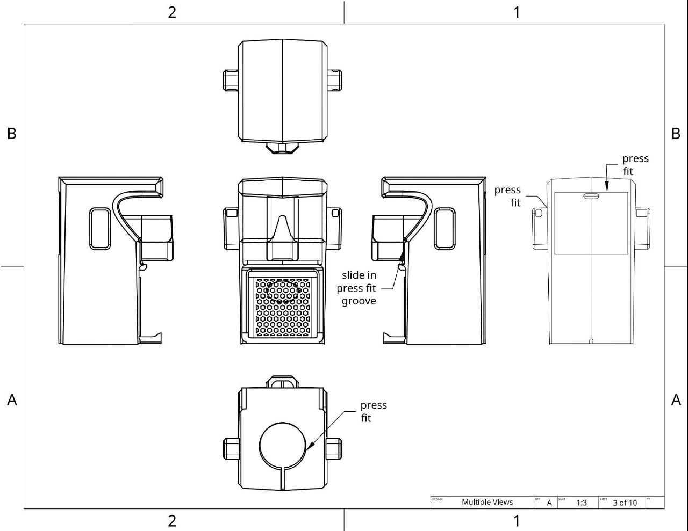
Multi-view drawing showing the press-fit and slide-in joints. 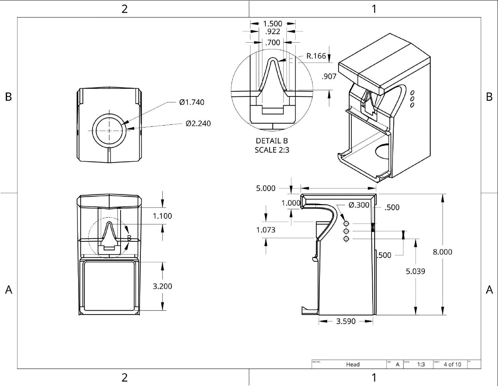
Head part drawing: 8.0 in tall, 3.59 in deep at the base. 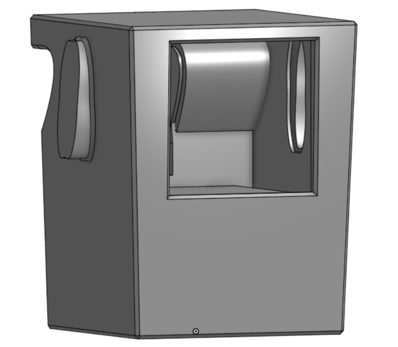
Design 4 as a first CAD concept, before survey feedback. 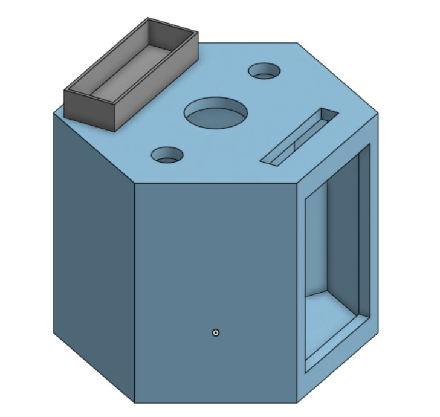
Design 2 concept, with a rotating interior. 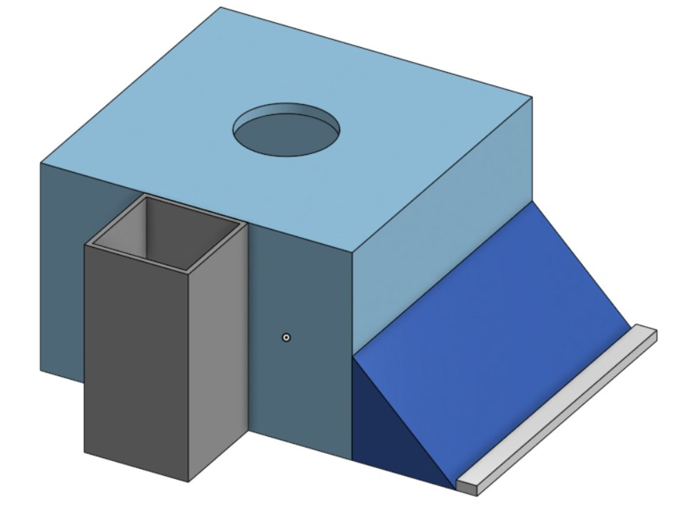
Design 3 concept. Its slanted phone rest made it into the final design. 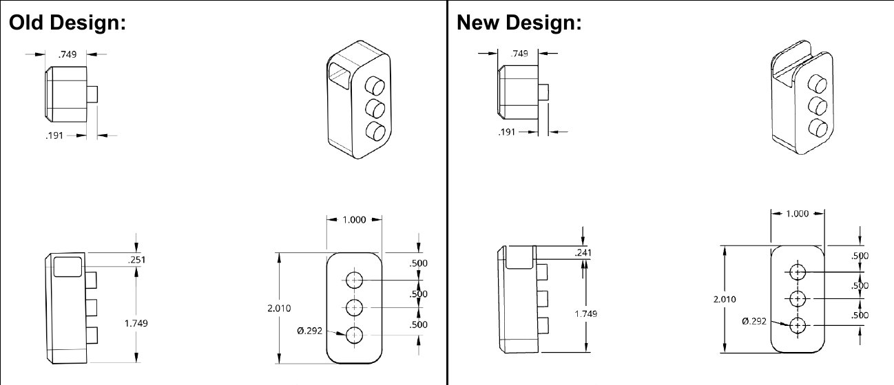
Ear part before and after: the closed glasses slot became an open top. 
Watch charger mount added after user testing. 
Design-for-manufacturing changes: interior flattened, head split in two. 
Injection mold half, designed with shrinkage allowance. 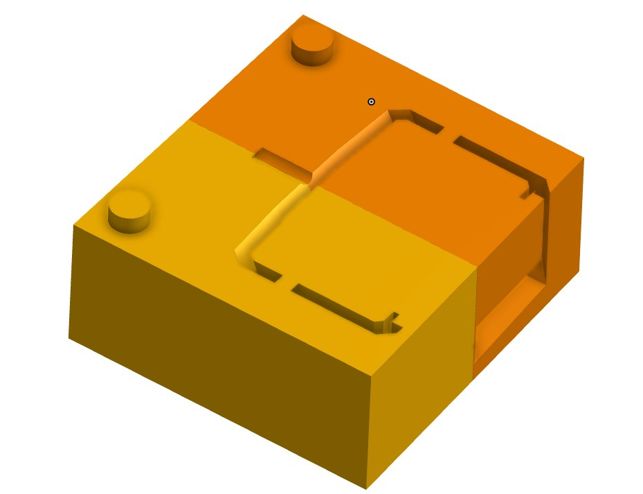
Two-part mold for the head, halves shown in different colors. 
Commercial version, ready for molding.


Analysis and test data
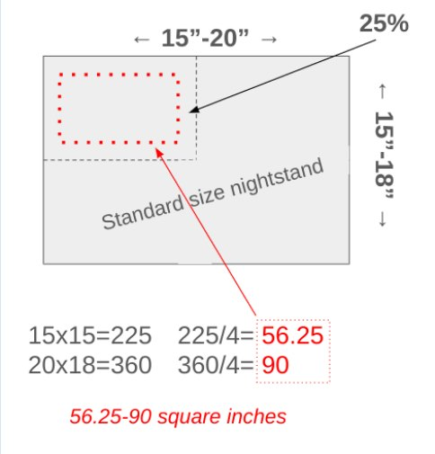
Footprint limit: 25% of a standard nightstand top, 56.25–90 sq in. 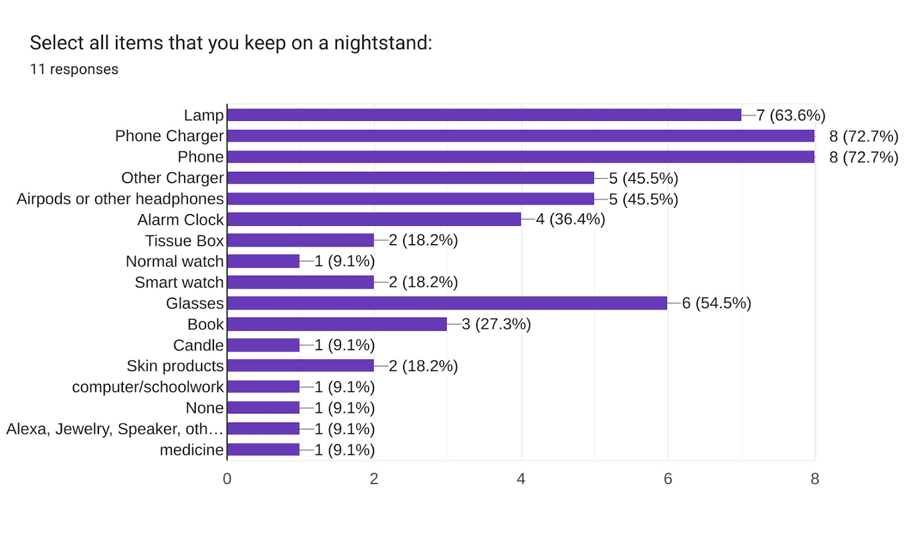
Research survey: what 11 students keep on their nightstand. 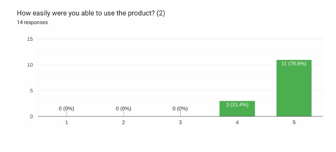
Ease of use: 11 of 14 testers gave it 5/5, the rest 4/5. 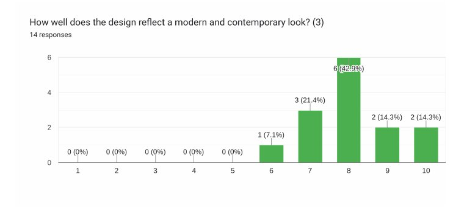
Modern look: average 8.1/10, with 8 the most common score. 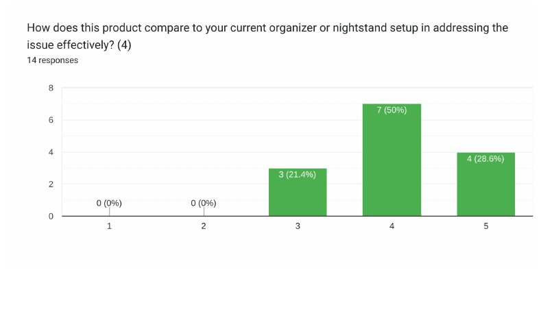
Compared with their current setup: average 4.1/5. 
Early idea sheet, with pros and cons for each. 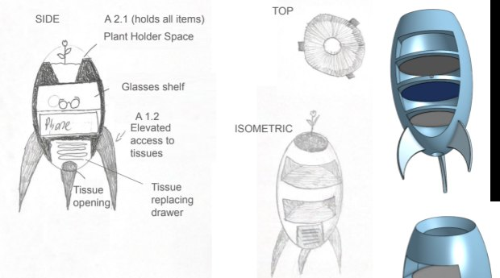
Design 1 sketches and form studies.


Physical prototypes
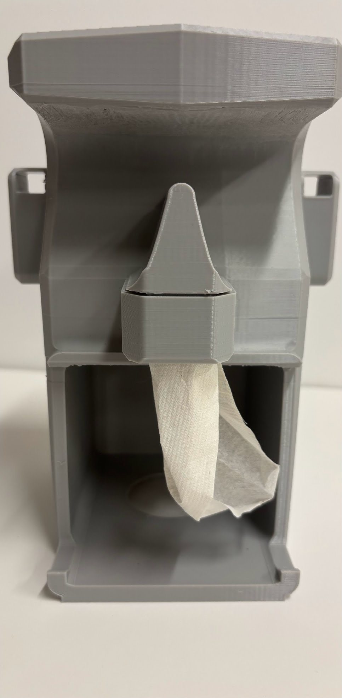
Tissues pull out through the nose and refill through a door on the back. 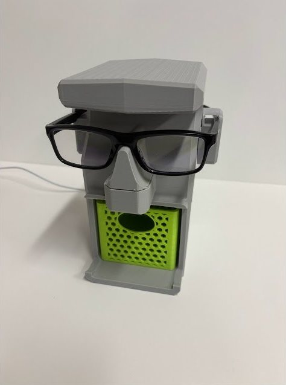
Glasses on the nose, with the PLA bin slid into the lower opening. 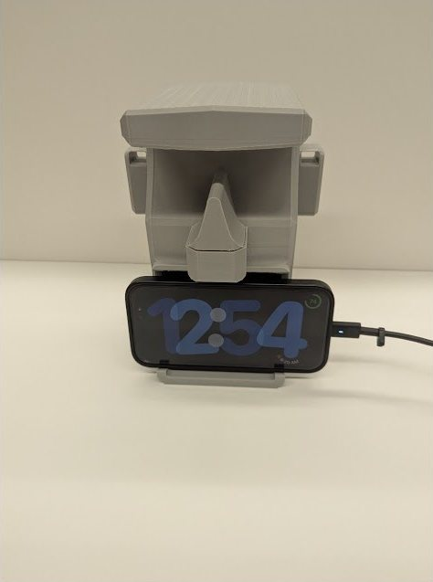
Phone on the stand, charging and showing the time. 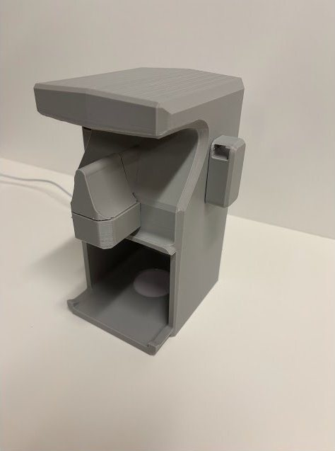
Side view showing the slanted phone rest and the ear. 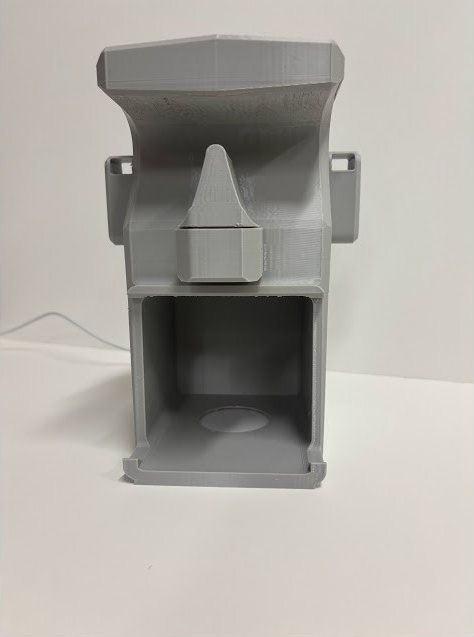
Lower compartment empty, before the bin goes in. 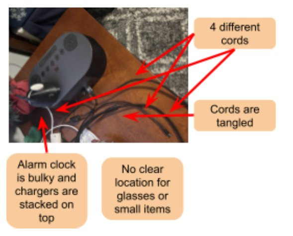
The starting problem: four tangled cords and no spot for glasses. 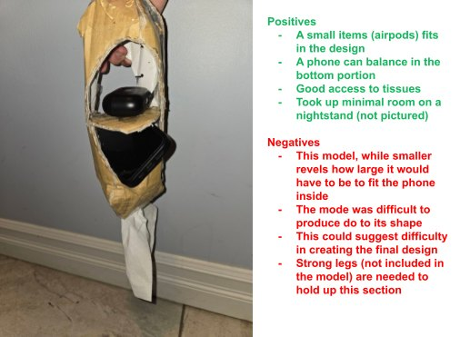
Cardboard mockup of design 1, with fit-test notes. 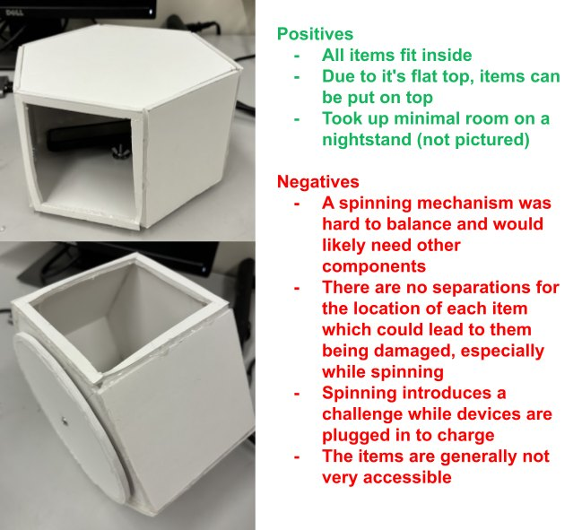
Cardboard mockup of design 2. 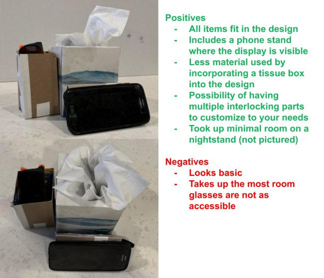
Cardboard mockup of design 3. 
Cardboard mockup of design 4, the chosen concept. 
Printed prototype with every item in place. 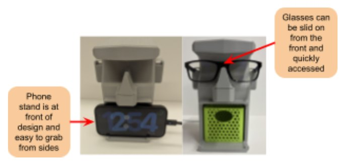
Phone grabs from the front; glasses slide on and off. 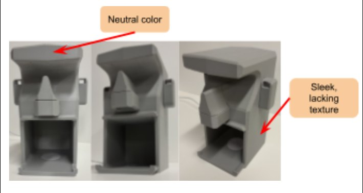
Neutral gray PETG with smooth, low-texture surfaces. 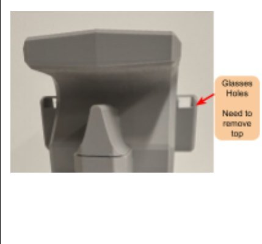
Issue found in testing: the glasses slot was too short for some frames.


Results and impact
I tested the prototype against the spec with a fit check and a survey of 14 users.
| Test | Result |
|---|---|
| Fit requirements | 5/5: 45 tissues, glasses, phone, a small item and tissue access, all at once |
| Ease of use | Average 4.8/5; 11 of 14 gave the top score |
| Modern look | Average 8.1/10; most common score 8 |
| Better than current setup | Average 4.1/5; nobody rated it below 3 |
The lowest score was effectiveness. Several testers didn't have much cord clutter to begin with, so the organizer solved less for them. Their feedback led to two changes I made: an open-top glasses slot and a watch charger mount. Other requests I logged for a future version were a vertical phone mount, a light and more modular parts.
The project took a design from a survey to a working prototype to a molding-ready version. Along the way I learned to treat user data as a design input and to design for how a part will actually be made.